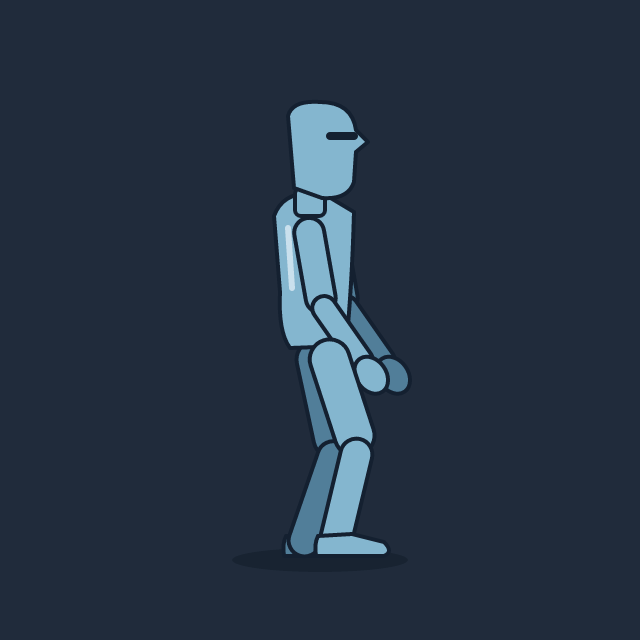
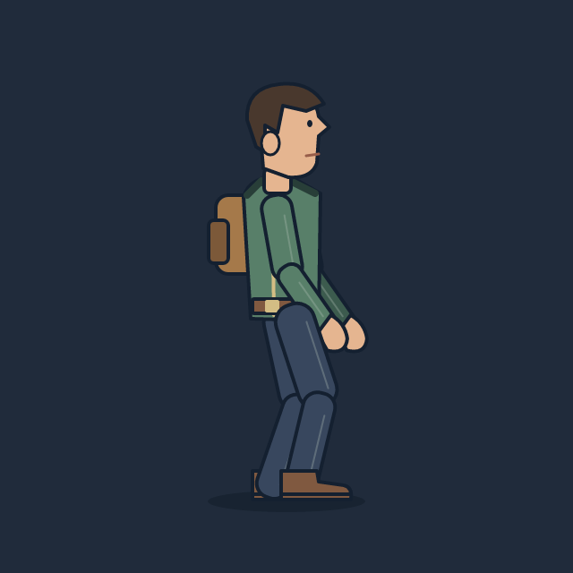
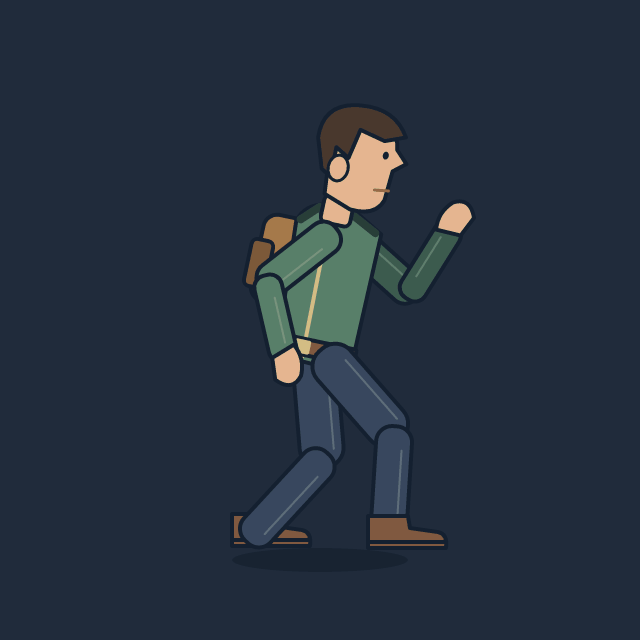

Персонажи и сменная внешность
Начните с человека с готовым скелетом и движениями. Меняйте одежду и рисунок частей, сохраняя анимации. Первая заготовка — персонаж для вида сбоку; это редактируемая основа, которую можно превратить в своего героя.


Создать персонажа
- Откройте Файл → Новое → Персонажи → Человек сбоку и нажмите «Создать».
- Сохраните новую сцену в своей папке проекта. Исходный шаблон останется на месте.
- В правой панели «Персонаж» выберите комплект «Манекен» или «Путник».
- Нажмите «Покой», «Ходьба», «Бег» или «Прыжок». Кнопка «Пауза» останавливает просмотр; таймлайн позволяет править движения как обычно.
Та же заготовка лежит в examples/character-side.msc. Она открывается в режиме «Игра». Режим UI и существующие заготовки интерфейсов сохраняются.
Надеть одежду и предметы
Раскройте «Части и одежда». Восемь слотов управляют головой, телом и одеждой, рукавами, кистями, ногами, обувью, предметом за спиной и предметом в руке. Например, можно оставить голубую голову манекена, надеть куртку и ботинки путника, снять рюкзак и дать ему учебный меч.
Один слот может включать несколько частей: рукава сразу охватывают оба плеча и предплечья, обувь — обе стопы. Переключение меняет их одновременно и отменяется одним Ctrl+Z. Рисунки остальных вариантов сохраняются в сцене. Комплект выбирает все слоты, отдельный слот — только свою часть. Смену внешности можно смотреть во время проигрывания движения.
Подобрав свою комбинацию, нажмите «Сохранить как комплект». Она появится в общем списке под именем «Мой комплект 1» и сохранится вместе со сценой. Движения и рисунки при этом не дублируются.

Сделать свою внешность
- В нужном слоте выберите ближайшую подходящую деталь и нажмите «Своя копия».
- В слоте появится «Мой вариант 1». Редактор вернётся в позу настройки и выделит его группы.
- Раскройте группы в слоях. Меняйте цвет, форму, узлы контура, добавляйте фигуры внутри этих групп. Их привязка к скелету уже подготовлена.
- Запустите ходьбу и бег, проверьте сгибы, перекрытия и крепление предметов. Переключитесь на исходную деталь и обратно: ваша версия сохранится.
Кнопка «Выбрать» находит группы текущего варианта. Детали остаются обычными объектами Motif: здесь нет закрытого формата рисунка. «Своя копия» подходит для обычных групп, в том числе с переопределёнными цветами и параметрами. Копирование варианта со своими анимационными дорожками, циклами, весами или морфингом пока отклоняется с объяснением; такие детали можно продолжать редактировать обычными инструментами.
Скелет и движения
Скелет включает таз, корпус, голову, плечи, предплечья, кисти, бёдра, голени и стопы. У ног две независимые цели IK: кости стоп. Потяните стопу, и колено подстроится. Кисть спереди служит точкой крепления предмета; рюкзак следует за корпусом. Исходная заготовка использует отдельные жёсткие детали с перекрытием в суставах — удобно для сменной одежды. Изгибы по костям и веса остаются доступны для мягкой одежды и других фигур.
Кнопка «Настройка» возвращает исходную позу для рисования. Готовые движения — стартовые циклы, которые можно менять. Ходьба и бег выполняются на месте; перемещение героя по уровню задаёт игра. В сцене есть машина состояний Humanoid с входами speed и jump, события шагов step и приземления land.
Для направления влево отразите всю группу hero по горизонтали. Общую группу можно масштабировать и поворачивать: IK ног сохраняет контакты со стопами. Масштабирование отдельных костей — изменение пропорций, которое требует отдельной настройки.
Смена рисунка при прежних точках суставов сохраняет движение. Существенное изменение длины рук, ног или расположения суставов требует подгонки скелета, целей IK и анимаций: автоматического переноса движений между разными пропорциями пока нет.
Сохранение и экспорт
Внешность, её варианты и скелет сохраняются в одном .msc. PNG, видео и обычный экспорт в Godot используют выбранный внешний вид; скрытые варианты не рисуются. Для экспорта только персонажа выберите группу hero: отдельная тень для просмотра не войдёт в него. Через CLI:
motif godot character-side.msc --node hero -o character-export
motif video character-side.msc --anim Walk --fps 20 -o walk.gif --transparentСмена одежды непосредственно внутри игры и экспорт синхронизированных отдельных слоёв экипировки — следующий этап. Первый вариант предназначен для сборки внешности и анимации в редакторе с последующим экспортом выбранного результата.
Следующие заготовки
После вида сбоку — вид сверху / ¾, затем фронтальные персонажи и портреты. У направлений будут общие роли костей, названия движений и слотов, но свои рисунки и правила перекрытия. Простое зеркалирование не заменяет виды спереди и со спины, особенно для оружия, рюкзака и асимметричной одежды.
Далее: библиотека пользовательских деталей, перенос комплекта между совместимыми скелетами, настройка пропорций, мягкая одежда, новые движения, позы и раздельный экспорт экипировки. Критерий совместимости — общая база, суставы, точки крепления, порядок частей, сетка и origin экспортированных кадров.
Описание набора для расширения
Служебная строка // @motif-characters после artboard хранит версию, корень персонажа, кости, слоты, варианты и комплекты. Она не меняет синтаксис фигур. Варианты ссылаются на обычные группы деталей; кости не должны находиться внутри переключаемых групп. Пустой список групп означает отсутствие предмета. Правка записи нужна только для добавления совершенно нового набора слотов; обычное рисование и создание копии варианта выполняются через интерфейс.
Удаление зарегистрированной группы через слои оставляет сообщение в панели персонажа: восстановите её через Undo или исправьте запись. Обычные инструменты сцены продолжают работать. При переименовании готового клипа его старая кнопка исчезает, а сам клип остаётся доступен на таймлайне.